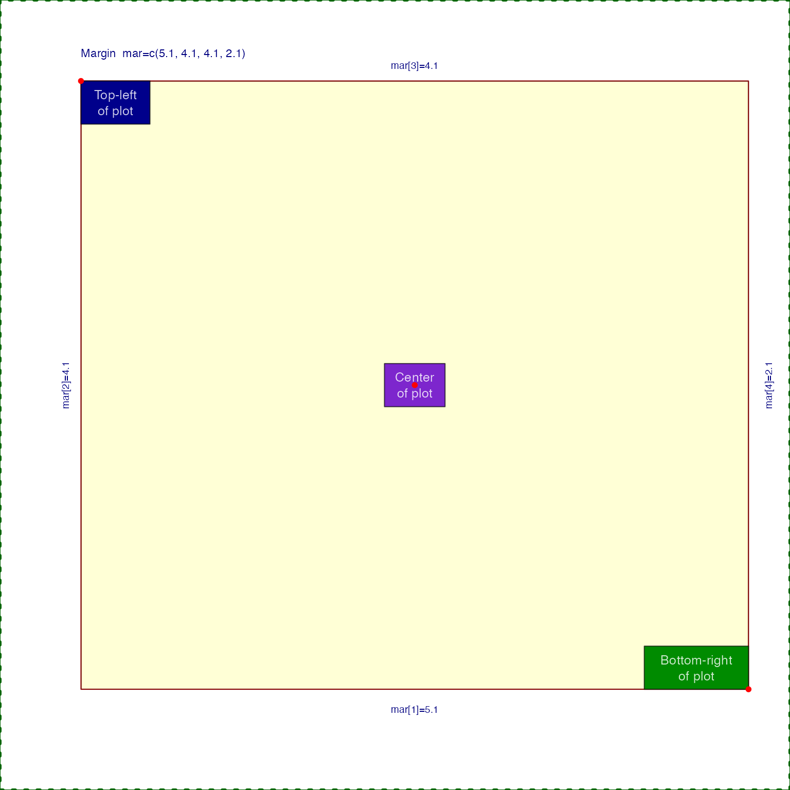

Draw text labels on a base R plot
drawLabels( txt = NULL, newCoords = NULL, x = NULL, y = NULL, lx = NULL, ly = NULL, segmentLwd = 1, segmentCol = "#00000088", drawSegments = TRUE, boxBorderColor = "#000000AA", boxColor = "#DDAA77", boxLwd = 1, drawBox = TRUE, drawLabels = TRUE, font = 1, labelCex = 0.8, boxCexAdjust = 1.9, labelCol = alpha2col(alpha = 0.8, setTextContrastColor(boxColor)), doPlot = TRUE, xpd = NA, preset = "default", adjPreset = "default", adjX = 0.5, adjY = 0.5, trimReturns = TRUE, verbose = FALSE, ... )
| txt | character vector of labels, length equal to |
|---|---|
| newCoords | optional |
| x, y | vector of x- and y- coordinates. |
| lx, ly | optional vector of segment endpoint coordinates, used to draw a line from x,y coordinates to the segment lx,ly coordinate. |
| segmentLwd, segmentCol | vector of segment line widths, and colors,
respectively. Each vector will be recycled to |
| drawSegments | logical whether to draw segments, where applicable. |
| boxBorderColor | vector of colors used for the box border around each label. |
| boxColor | vector of colors used for the box background behind each label. |
| boxLwd | vector of box line widths, sent to |
| drawBox | logical whether to draw boxes behind each text label. |
| drawLabels | logical whether to draw each text label. |
| font | vector of font values as described in |
| labelCex | vector of cex values used for text labels. This vector
will be recycled to |
| boxCexAdjust | numeric vector length=2, used to expand the x-width and y-height of the box around around text labels. |
| labelCol | vector of label colors, by default it calls
|
| doPlot | logical whether to perform any plot operations. Set
|
| xpd | value compatible with |
| preset | vector of text values used to position text labels relative
to the x,y coordinate, where "topleft" will position the label so the
entire label box is top-left of the point, therefore the point will be
at the bottom-right corner of the label box. When |
| adjX, adjY | the text adjustment of labels relative to the x,y
coordinate. The values are recycled to |
| trimReturns | logical whether to trim leading and trailing return (newline) characters from labels. |
| verbose | logical whether to print verbose output. |
| ... | additional arguments are passed to |
invisible data.frame containing label coordinates used
to draw labels. This data.frame can be manipulated and provided
as input to drawLabels() for subsequent customized label
positioning.
This function takes a vector of coordinates and text labels, and draws the labels with colored rectangles around each label on the plot. Each label can have unique font, cex, and color, and are drawn using vectorized operations.
TODO: In future allow rotated text labels. Not that useful within a plot panel, but sometimes useful when draw outside a plot, for example axis labels.
Other jam plot functions:
adjustAxisLabelMargins(),
coordPresets(),
decideMfrow(),
getPlotAspect(),
groupedAxis(),
imageByColors(),
imageDefault(),
minorLogTicksAxis(),
nullPlot(),
plotPolygonDensity(),
plotSmoothScatter(),
shadowText(),
showColors(),
smoothScatterJam(),
sqrtAxis(),
usrBox()
nullPlot();drawLabels(x=par("usr")[1], y=par("usr")[4], txt="Top-left\nof plot", preset="topleft", boxColor="blue4");drawLabels(x=par("usr")[2], y=par("usr")[3], txt="Bottom-right\nof plot", preset="bottomright", boxColor="green4");drawLabels(x=mean(par("usr")[1:2]), y=mean(par("usr")[3:4]), txt="Center\nof plot", preset="center", boxColor="purple");points(x=c(par("usr")[1], par("usr")[2], mean(par("usr")[1:2])), y=c(par("usr")[4], par("usr")[3], mean(par("usr")[3:4])), pch=20, col="red", xpd=NA);